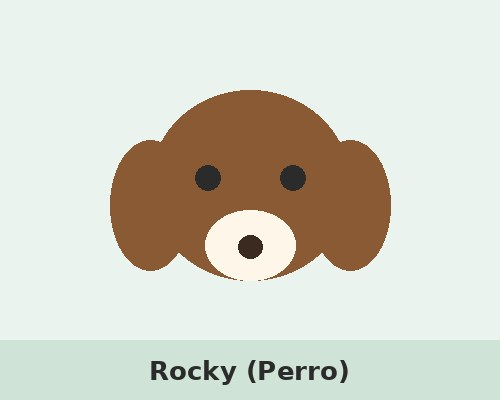
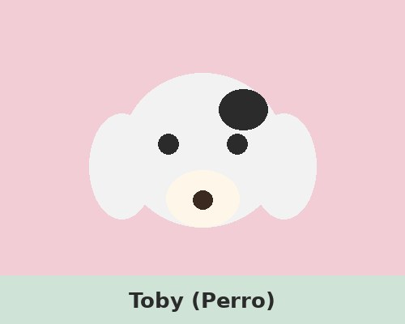
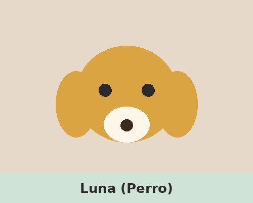
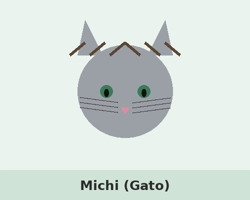
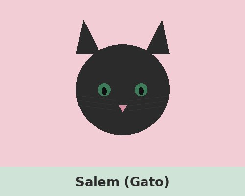
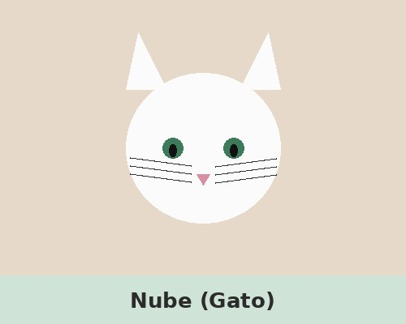

Rocky
Zona: Barrio Norte, La Plata
Fecha: 03/09/2026
Características: mediano, pelo corto marrón, collar rojo.
Ver ficha en PDFElegí una categoría para ver el listado de mascotas perdidas.

Zona: Barrio Norte, La Plata
Fecha: 03/09/2026
Características: mediano, pelo corto marrón, collar rojo.
Ver ficha en PDF
Zona: Plaza San Martín, La Plata
Fecha: 28/08/2026
Características: pequeño, blanco y negro, muy sociable.
Ver ficha en PDF
Zona: Camino Centenario km 5
Fecha: 05/09/2026
Características: grande, pelaje dorado, cicatriz en la oreja izquierda.
Ver ficha en PDF
Zona: Calle 7 y 50, La Plata
Fecha: 01/09/2026
Características: gris atigrado, ojos verdes, castrado.
Ver ficha en PDF
Zona: Barrio Hipódromo, La Plata
Fecha: 20/08/2026
Características: negro, collar con cascabel.
Ver ficha en PDF
Zona: City Bell
Fecha: 07/09/2026
Características: blanco, con una mancha gris en la cola.
Ver ficha en PDF